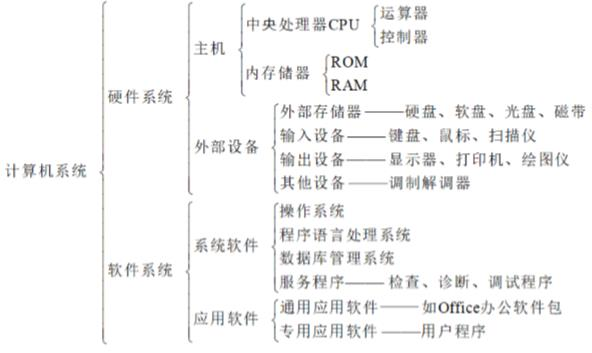
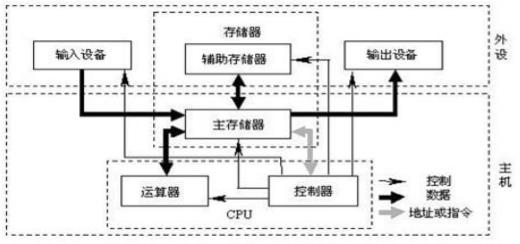
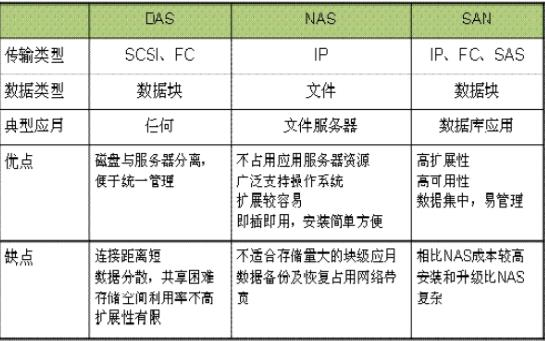
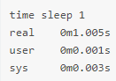
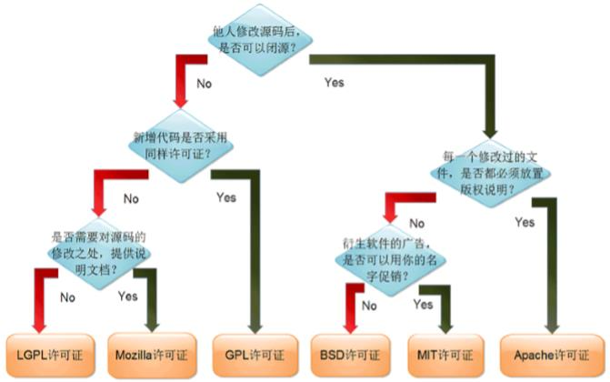

编程语言：
硬件级：微码编程，汇编语言
系统级：C，C++，...
应用级：Java, PHP, Python, Ruby, Perl, C#, ...
Python： PVM
Standard Library
Web Framework：Django, Flask, ...
Java：JVM，JDK
bash：bash explainer
...
计算机系统
计算机系统由硬件(Hardware)系统和软件(Software)系统两大部分组成

计算机硬件组成

冯诺依曼体系：1946年
计算机五大部件：运算器、控制器、存储、输入输出设备
cpu
cpu：运算器，控制器
主频：主频是CPU的时钟频率(CPU Clock Speed)，是CPU运算时的工作的频率（1秒内发生的同步脉冲数）的简称。单位是Hz。
外频：系统总线的工作频率， CPU与外部（主板芯片组）交换数据、指令的工作 时钟频率
倍频：倍频则是指CPU外频与主频相差的倍数
高速缓存（cache）：高速交换的存储器。CPU缓存分为一级，二级，三级缓存， 即L1，L2，L3
内存总线速度(Memory-Bus Speed): 一般等同于CPU的外频，指CPU与二级(L2) 高速缓存和内存之间的通信速度
地址总线宽度:决定了CPU可以访问的物理地址空间
主频=外频*倍频
cpu架构：
RISC，精简指令集
CISC，复杂指令集
内存
内存储器：ROM，RAM
内存带宽：
内存带宽是指内存与北桥芯片之间的数据传输率
单通道内存节制器一般都是64-bit的，8个二进制位相当于1个字节，换算成 字节是64/8=8，再乘以内存的运行频率，如果是DDR内存就要再乘以2
计算公式：
内存带宽=内存总线频率×数据总线位数/8
硬盘
转速是指硬盘盘片每分钟转动的圈数，单位为rpm。现在硬盘的转速已经达到10000rpm，15000rpm
硬盘接口类型：
IDE接口：硬盘接口规范，采用ATA技术规范
SCSI接口：应用于小型机上的高速数据传输技术
SATA接口： Serial ATA，提高传输速率，支持热插拔
SAS接口： Serial Attached SCSI，兼容SATA
目前主流的硬盘接口为SATA和SAS接口
存储基础知识
DAS-----直接连接存储(Direct Attached Storage)
NAS-----网络连接存储(Network Attached Storage)
SAN-----存储区域网络(Storage Area Networks)

服务器
服务器按应用功能可分为：
Web服务器、数据库服务器、文件服务器、中间件应用服务器、日志服务器、 监控服务器、程序版本控制服务器、虚拟机服务器、邮件服务器、打印服务器、 域控制服务器、多媒体服务器、通讯服务器、ERP服务器等 服务器按外形分类： 塔式服务器、刀片式服务器、机架式服务器
塔式Tower服务器
外形以及结构和平时使用的立式PC差不多
目前较少使用
刀片式Blade服务器
在标准高度的机架式机箱内可插装多个卡式的服务器单元，实现高可用和高密度
更高的密度，集中管理，高性能，灵活扩展，按需配置
可以使用系统软件将这些母板集合成一个服务器集群。在集群模式下，所有的母板可以连接起来提供高速的网络环境，并同时共享资源，为相同的用户群服务
机架式服务器
1U：1.75英寸，44.45毫米；宽度，19英寸；深度，1000毫米
用户和内核空间
用户空间：User space
用户程序的运行空间。为了安全，它们是隔离的，即使用户的程序崩溃，内核也不受影响 只能执行简单的运算，不能直接调用系统资源，必须通过系统接口（ system call），才能向内核发出指令
内核空间：Kernel space
是Linux 内核的运行空间 可以执行任意命令，调用系统的一切资源
使用time命令查看

用户空间user花费的空间，内核空间sys花费的空间，真实real花费的时间
服务器三大操作系统
Windows
Linux：GNU/Linux
Unix：1969年Ken Thompson
System: Bell Lab
AIX （IBM）
Solaris (SUN)
HP-UX (HP)
BSD: （BSRG）Berkeley System Distribution
NetBSD
OpenBSD
FreeBS
GNU提供软件/Linux提供内核
IEEE 电气和电子工程师协会定义的POSIX
POSIX Portable Operating System Interface
可移植操作系统接口 定义了操作系统应该为应用程序提供的接口标准
API规范 应用程序接口规范
ABI Application Binary Interface 应用程序二进制接口
开源协议

Linux发行版本
redhat与centos系统之间的区别
1.redhat 现在是免费下载 更新 安装软件 提供服务帮助。
2.CentOS 做到和redhat一模一样
1)去掉redhat里面的收费的项目和logo
2)开发相同功能的软件